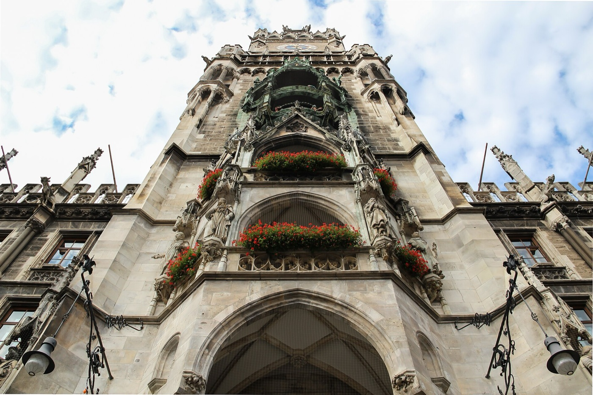
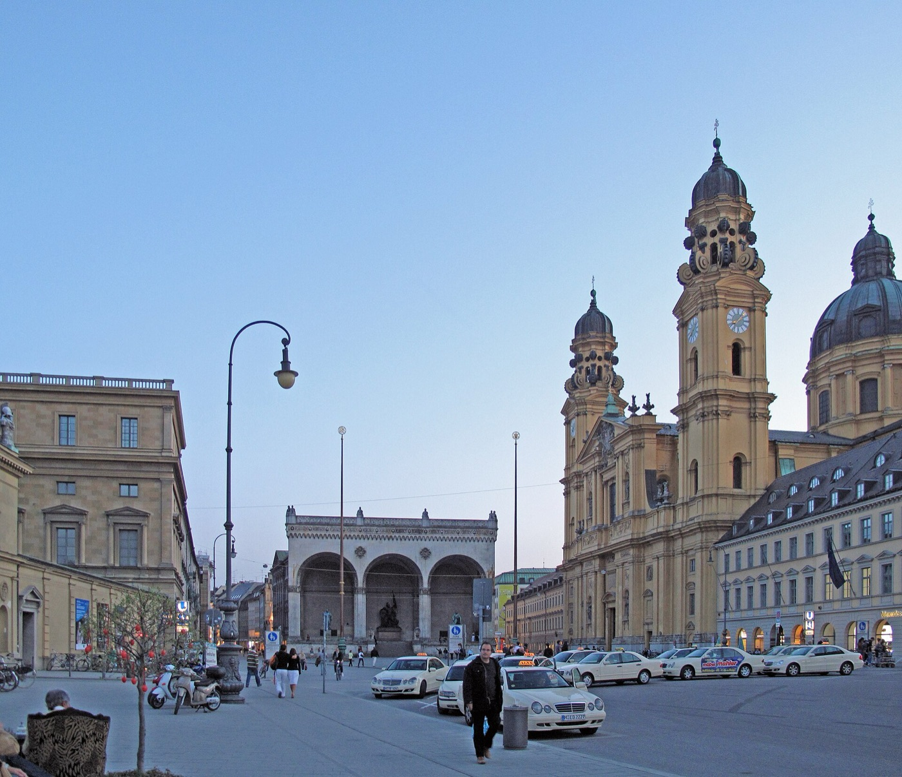
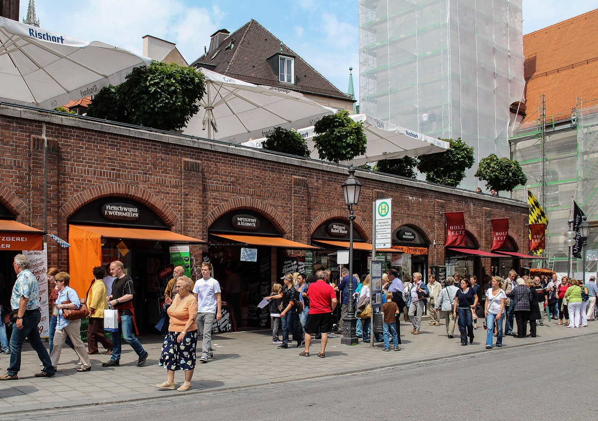
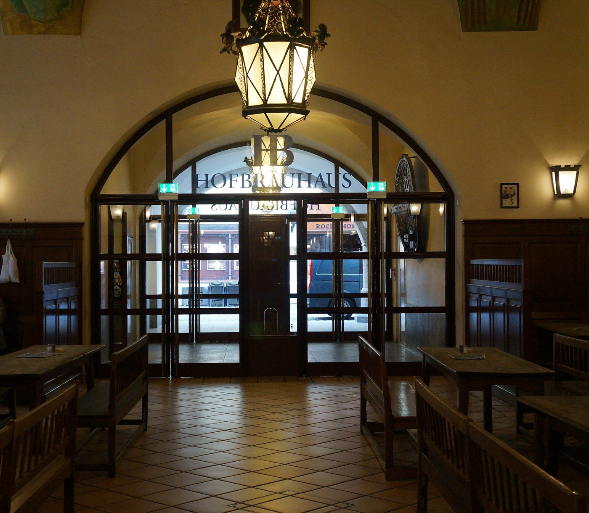
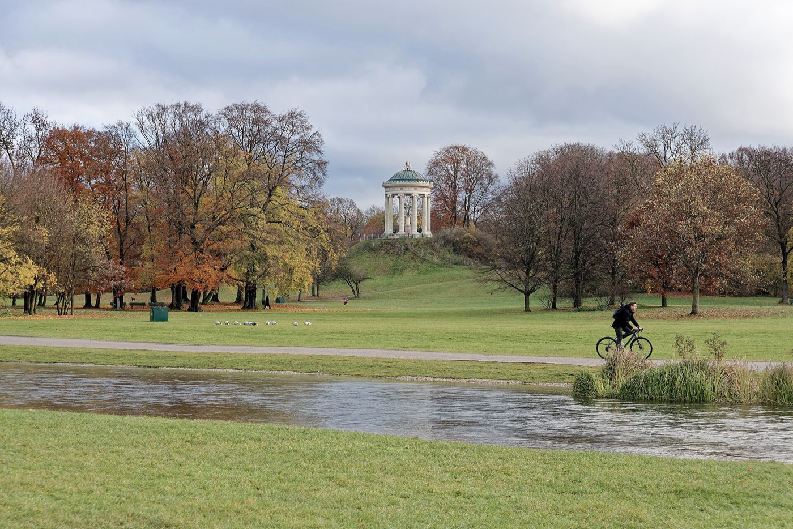
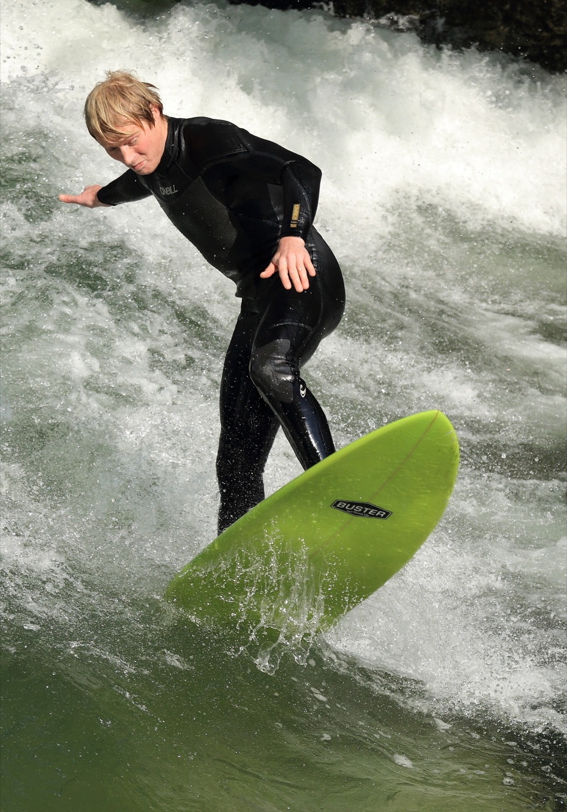
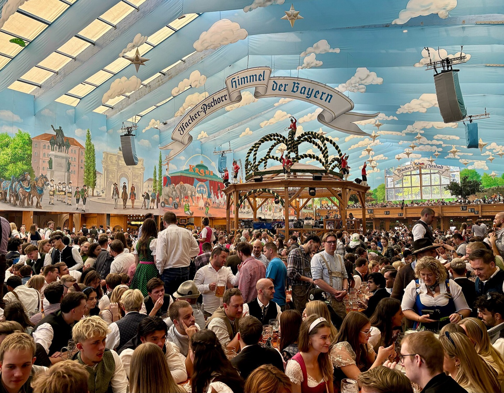

After breakfast and checkout.

Friday · September 18, 2026
One good day
in Munich.
Forsthofgut → old town → English Garden → Hilton Munich Airport. A compact, stroller-friendly finale with Bavarian atmosphere but no wasted detour to a closed Oktoberfest.
Follow the day ↓Add buffer for A8 traffic.
Mostly flat and stroller-friendly.
Check into the Hilton without rushing.
The cleanest logistics
Park once on Munich’s east side.
Use P+R Michaelibad at Heinrich-Wieland-Str. 5. It is on your approach from the southeast, costs €2 for the day, and the U5 goes directly to Odeonsplatz in roughly 15 minutes. Keep your transit ticket because parking is reserved for public-transport users.
After the city, return on the U5, collect the car and drive approximately 35–50 minutes to Hilton Munich Airport. This avoids central parking and the Hilton’s published €44 daily parking price until you actually check in.
The recommended edit
Architecture, lunch,
then open green space.
Start at Odeonsplatz and finish at the Eisbach. The route naturally becomes quieter as Rue’s energy fades.

01U5 exit · easy beginning
Odeonsplatz + Hofgarten
Step out into the yellow Theatinerkirche, Feldherrnhalle and the formal Hofgarten. It gives you an immediate Munich landmark without fighting old-town traffic.
- Flat, stroller-friendly paths
- Short garden loop if the drive ran late
- Walk about 12 minutes to Marienplatz
02
Signature city stop
Marienplatz at noon
Arrive before the 12:00 Glockenspiel. The figures in the New Town Hall tower reenact a royal wedding and the coopers’ dance; the performance also runs at 11:00 and 17:00 in September.
- Watch from the square
- Oktoberfest City Shop inside the tourist office
- Skip tower climbs with the stroller

03Lunch · flexible with a baby
Viktualienmarkt
Munich’s central food market has roughly 100 stalls plus a beer garden. Build lunch from sausages, bread, cheese, fruit and pastries, or settle at the communal tables if the weather cooperates.
- No reservation required
- Fast exit if Rue is done
- Market generally operates 8:00–20:00

04Optional · Oktoberfest substitute
Hofbräuhaus
Pop inside for the painted hall, long communal tables and Bavarian beer-hall atmosphere. You do not need to make this a second lunch—one drink, pretzel or quick look is enough.
- About seven minutes from Viktualienmarkt
- Loud and lively, but daytime is manageable
- Skip it if everyone wants the park

05Nature chapter · choose your distance
English Garden
Enter near the south end and follow the shaded paths. The garden is enormous, so there is no need to “complete” it. The Monopteros gives the best compact scenic payoff.
- Good nap-stroller terrain
- Lawns for a baby break
- Optional longer walk to the Chinese Tower beer garden

06Memorable finish · 15–25 minutes
Eisbach surfers
Watch experienced surfers take turns on the permanent river wave at the park’s edge. It is a genuine Munich oddity and a better final image than another church interior.
- Watching only—the current is dangerous
- Stay behind the railing with Rue
- From here, walk or transit back toward the U5

The Friday reality
Built—but not open.
Oktoberfest begins Saturday, September 19, not September 20. The tents open at 9:00 Saturday, but beer is not served until the mayor taps the first keg at noon.
On Friday the grounds are in final setup and there is no public soft opening. You may see completed tents and rides from outside, but access will be controlled. With one Munich day and a baby, the detour is not worth replacing the English Garden.
Available FridayDecorations, traditional clothing, city souvenir shop, beer hallsNot available FridayTents, rides, fairground food or official events
Official 2026 schedule ↗Adjust without breaking the day
Three versions.
All six stops
Best if you park by 11:30 and the weather is pleasant.
Old town + Eisbach
Marienplatz, market lunch, Hofgarten and the surfers. Skip Hofbräuhaus and Monopteros.
Old town indoors
Marienplatz, lunch, Hofbräuhaus and the Residenz or Deutsches Museum before the airport.
Before leaving the car
The small things.
- Keep passports, medication and electronics with you; do not leave obvious luggage visible.
- Bring the stroller plus carrier—cobbles are manageable, but the carrier helps inside busy rooms.
- Save the Hilton address: Terminalstraße Mitte 20, 85356 München-Flughafen.
- Leave central Munich by roughly 5:00–5:30 to absorb Friday traffic and settle into the hotel.
Live references
Marienplatz + Glockenspiel ↗Viktualienmarkt ↗English Garden ↗Michaelibad P+R ↗Hilton airport details ↗Checked September 17, 2026. Drive times are planning ranges and can change significantly with Friday traffic. Attraction photos are from Wikimedia Commons; official information is linked above.